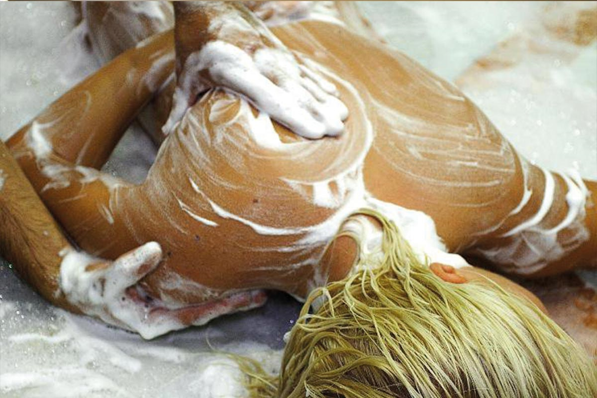

Alanya massage centre
Home
About
Treatments
Treatments
Packages
Turkish Bath
Peeling
Extra Massage
Sauna
Relax
Doctor Fish
Hair styling
Manicure
Gallery
Contact Us
Home
Massage List
Bespoke Massage list
Shiatsu Massage
Shiatsu, meaning "pressing with a finger", is a type of massage that aims to eliminate the imbalance in the distribution of life energy. Shiatsu massage is applied based on pressing the reflex points of the body with fingers. In this way, you can have a more fit and relaxed body free from stress.
Reflexiology Massage
A massage technique applied with hands and fingers to the reflex points corresponding to all parts of the body on the feet. It eliminates tensions and problems in certain parts of the body as a result of the stimulation of certain points on the sole of the foot. It is a method recommended for a comfortable pregnancy as it is used in the treatment of internal organs disorders.
Tui Na Massage
The Tui Na technique dates back 2000 years. It can also be defined as a type of body therapy of Chinese origin. This massage technique used by Chinese experts is applied to the neck, shoulder, back, head and arm areas; it is effective in the treatment of ailments in these areas. Tui Na allows blocked energy to be released in the upper body and head area.
Aromatherapy Massage
Aromatherapy; It is a type of massage applied using fragrant herbal essential oils for physical, emotional, spiritual health and beauty. While some of the essential oils used during the massage relaxes, others revitalize the skin by helping to remove toxins.
Reiki Massage
Reiki is a type of meditation originating from India. The energy taken from nature is transferred to the person in this massage, which is performed to open and cleanse the 7 assumed chakras in the human body without touching the body. During the massage, negative energy in closed channels is loaded with positive energy taken from nature. In Reiki massage, candle and incense increase concentration.
Swedish Massage
Developed in 1776 by Per Henrik Ling of Sweden and applied for therapeutic purposes, Swedish massage is used all over the world for medical, sporting and relaxing purposes. Massage with herbal oils helps relax the body and soften the muscles.
Sports Massage
This massage technique, which prevents problems that may occur on the muscles by regulating the blood circulation when applied after sports, helps the muscles to be renewed.
Skin Repair Massage
Skin repair massage using aromatic oils; It ensures that the skin is nourished, the nervous system is soothed, the muscles are relaxed and negative energy is released.
Bali Massage
Balinese massage applied with special herbal and fruit oils provides a great relaxation in the body by increasing blood circulation and reducing muscle tension. The massage applied to the whole body with strong movements focuses especially on the hand and foot area.
Manual Therapy Massage
This massage, which has more therapeutic properties, is applied in many ailments from hernia treatment to posture and spine disorders. Pressure is applied to some parts of the body and shrinkage movements are applied to the skin.
Classical Massage
A massage technique applied to the whole body with sesame oil. It is applied for the body to rest and gain dynamism.
Local Massage
This massage, which is applied locally, is applied with aromatic oils only to regional narrow areas such as back and neck, legs or face. It also shows a treatment feature in the problems in these regions.
Medi Massage
Medi massage, a scientific type of massage, is a special massage that lasts 90 minutes. It is applied in detail to every part of the body with aromatic oils.
Slimming Massage
In this massage especially; A mixture of nettle oil, thyme oil, flax oil and sesame oil is used. In this way, blood circulation is accelerated and toxins accumulated in the body are removed. The body is both thinning and recovering.
Cellulite Massage
In this massage method, lymph drainage system is used. With the acceleration of blood circulation, aromatic oils are applied in areas with dense cellulite.
Sultan's Six Hand Massage
Massage technique applied with three masseurs is based on applying pressure to special points of the body. Thanks to this massage, care is provided from the ends of the hair to the toes.
Relax and Bioenergy Massage
Relax and bioenergy massage, which are effective against muscle pain and stress, are applied to the whole body. While aromatic oils create a feeling of relaxation, the techniques applied during the massage give vitality to the body and soul.
The Ritz Carlton Massage
This massage using hot oils with a refreshing aroma is supported by special Mediterranean fragrances. Aromas create a renewed feeling as well as therapeutic properties.
Traditional Turkish Massage
In this method, in which authentic massage techniques are used, all weak tissues and passive muscles of the body are activated. The oils used in the massage help the body rejuvenate.
×
×

×
×
×
×